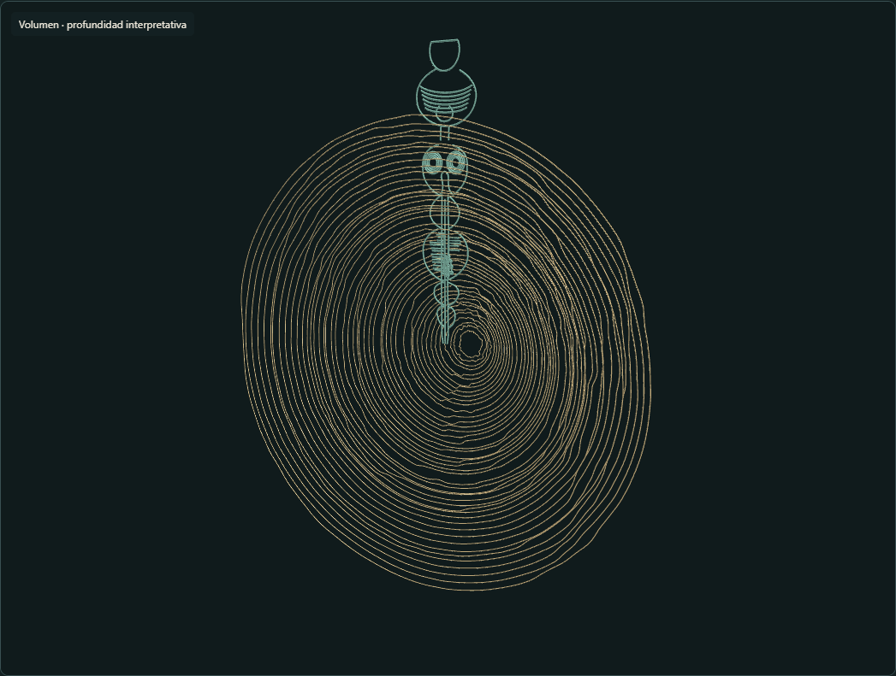

Observar
Partir de la fotografía y distinguir lo visible de lo reconstruido.
Una investigación visual de una lámina cabalística circular y lineal. El proyecto estudia sus círculos, figuras y eje central mediante una reconstrucción geométrica y una lectura documental por zonas.
Edición de estudio 1.5
Partir de la fotografía y distinguir lo visible de lo reconstruido.
Situar inscripciones y registrar traducciones parciales junto con sus dudas.
Usar el espacio tridimensional para comparar las relaciones gráficas de la lámina.
La imagen original es la fuente visual. El trazado, las capas y el modelo 3D son herramientas de estudio; no representan dimensiones físicas medidas del manuscrito. Las lecturas hebreas son parciales y la identificación exacta del ejemplar fotografiado sigue pendiente de cotejo especializado.
Esta página presenta el proyecto. El atlas interactivo, los datos de trabajo y los modelos descargables no forman parte de esta vista pública.